BOSE Wave Radio/CD b-021
型番と色
- 機種: Wave Radio/CD
- 型番: AWRC0P
- 色: プラチナムホワイト
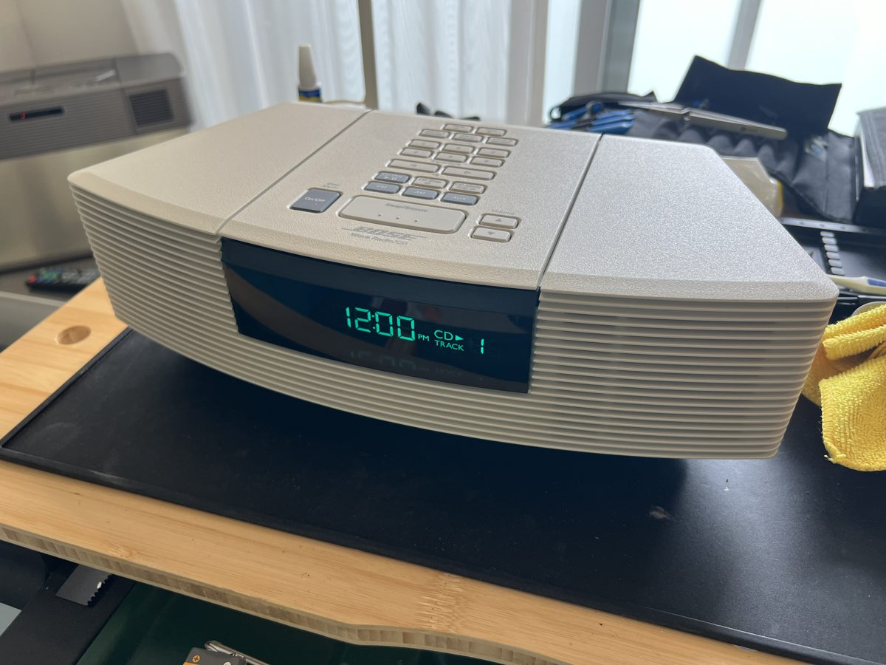
組み上げ後の通電確認
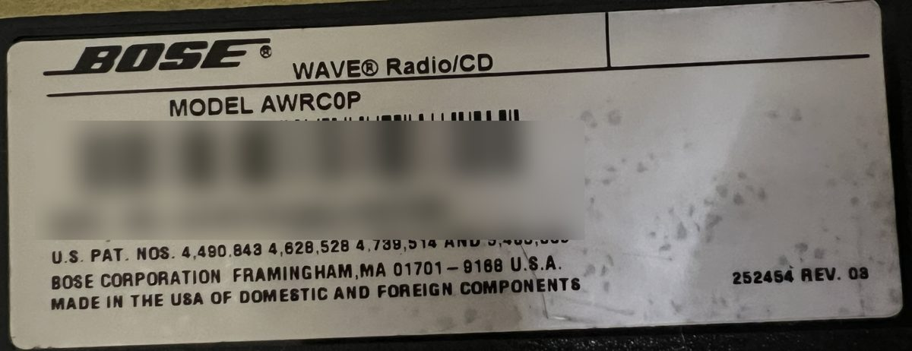
底面ラベル（シリアル番号は伏せています）
整備内容
外装
- トップカバーと底部シャーシの分解水洗い
- 表示窓（グリーンのレンズ）の清掃、研磨
- 操作ボタンの清掃
内部
- メイン基板の清掃
- 表示基板の清掃
- 背面端子（AUX IN・LINE OUT・FMアンテナ端子）の清掃、研磨
- 内部コネクタとフラットケーブルの接点洗浄
- スピーカーユニットの点検と清掃
- 内部のほこりの除去
- 劣化した発泡スポンジの撤去
- スピーカーケーブルへのハーネステープの巻き直しと取り回し
- フェルト系クッションの装着
CD
- CDメカの清掃
- CDメカの可動部（レール・ギア）の古い油脂の除去と注油
- ピックアップレンズの清掃
底面・電池
- 底面の足を3M バンポンに交換
- バックアップ用9V電池の新品交換
- ACケーブルの点検、清掃、接点の研磨
点検
- 全機能の動作確認（CD・FM・AM・アラーム・リモコン受光・AUX入力）
- エージング、視聴テスト
- リモコン（オプション）での動作確認
動作確認
すべての機能をテストし、正常に動作しています。
クリーニング
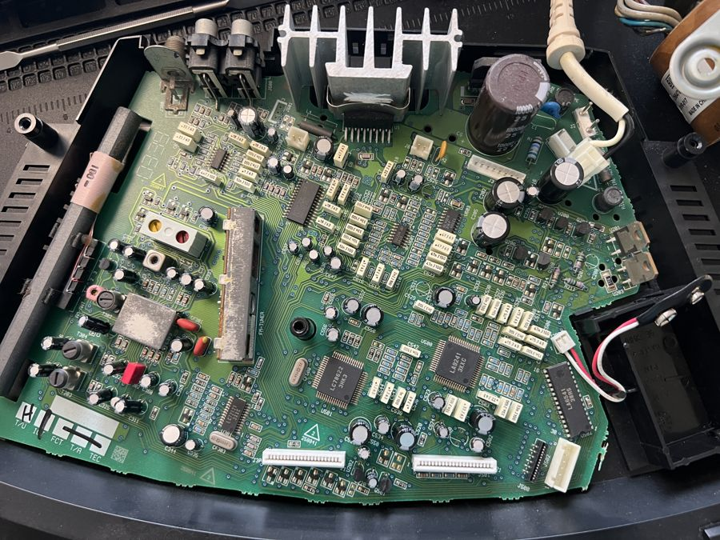
メイン基板
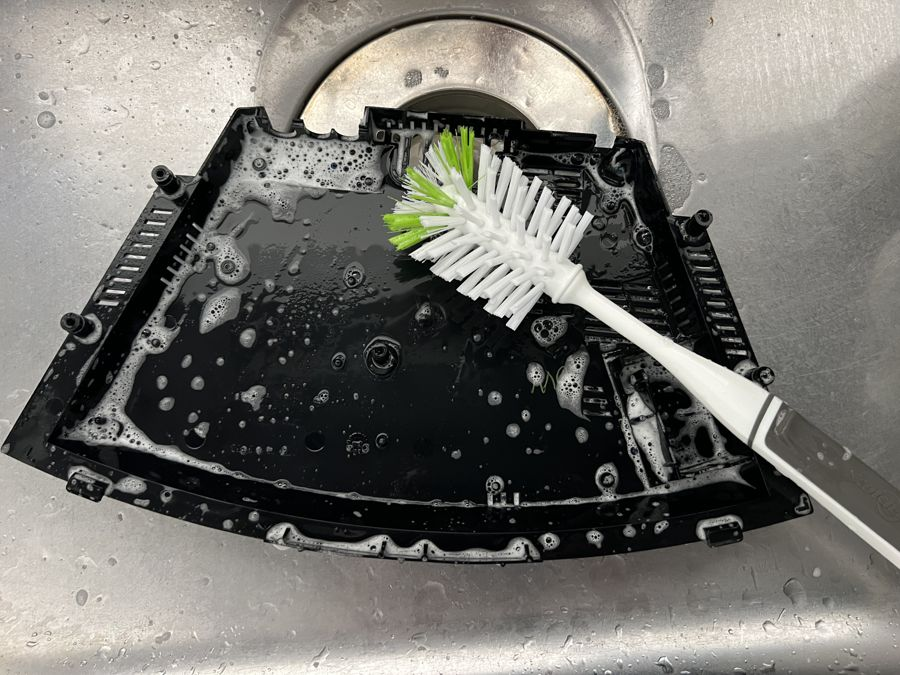
外装の洗浄
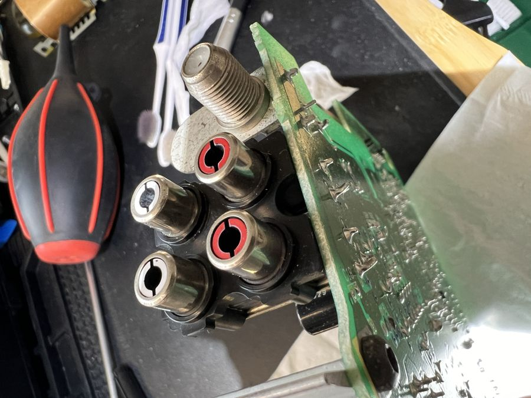
背面端子
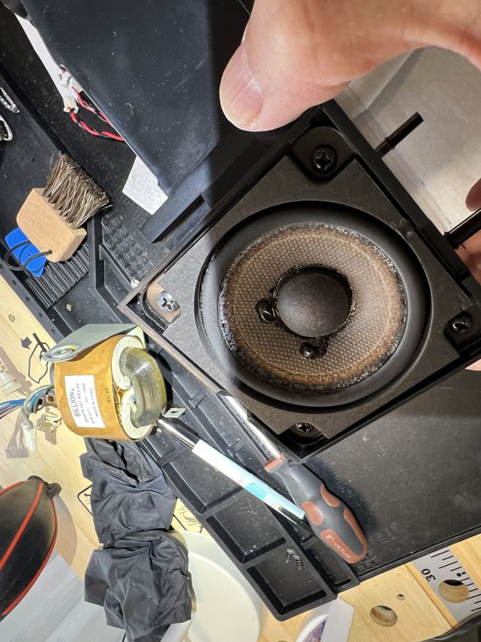
スピーカー
発泡スポンジの撤去
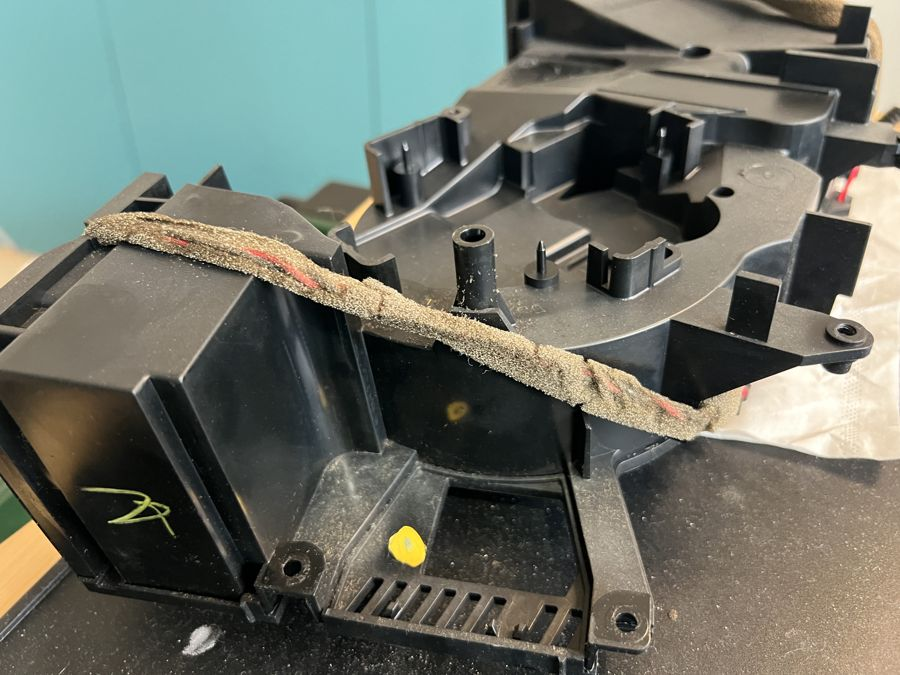
劣化した発泡スポンジ
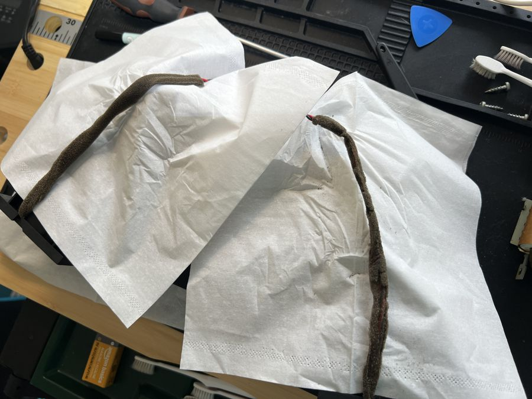
撤去した発泡スポンジ
ハーネステープの取り回し
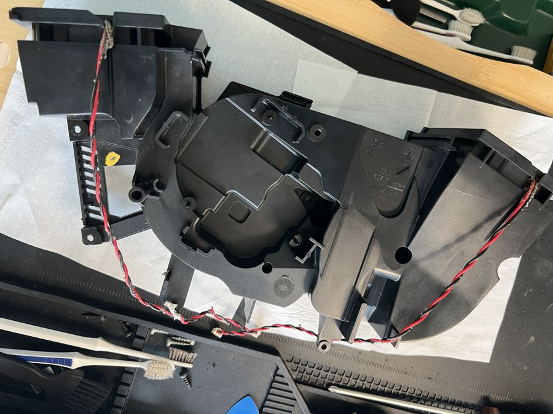
テープを巻く前
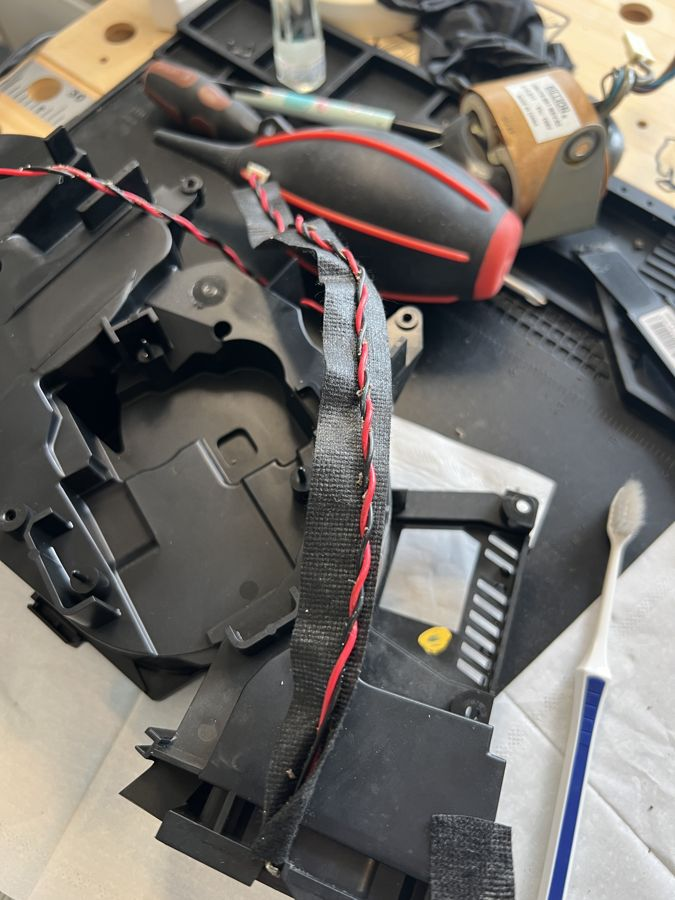
テープを巻いたあと
フェルト系クッションの装着
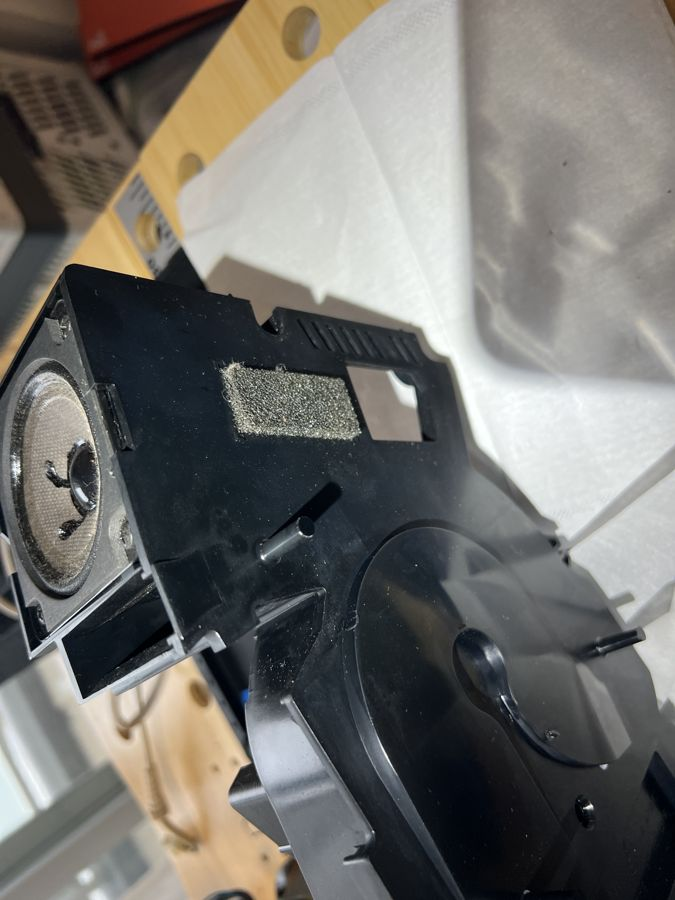
劣化したクッション
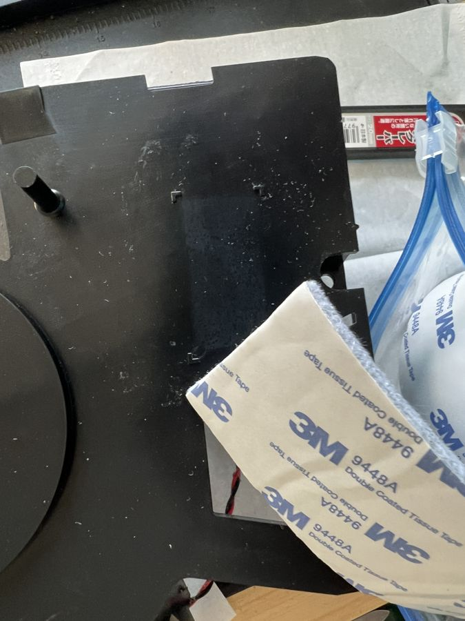
新しいクッション
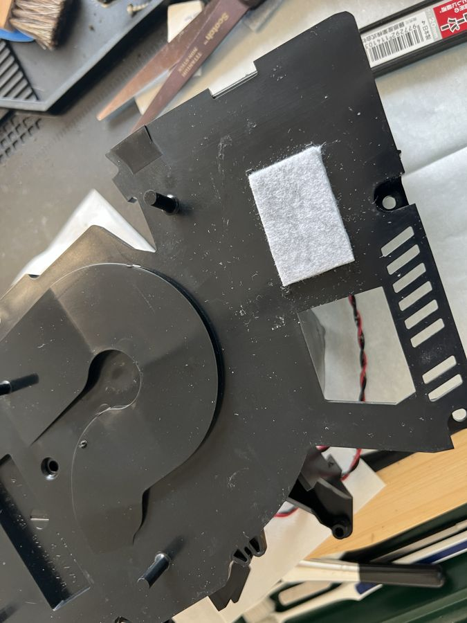
装着したところ
3M バンポン
再組み上げ